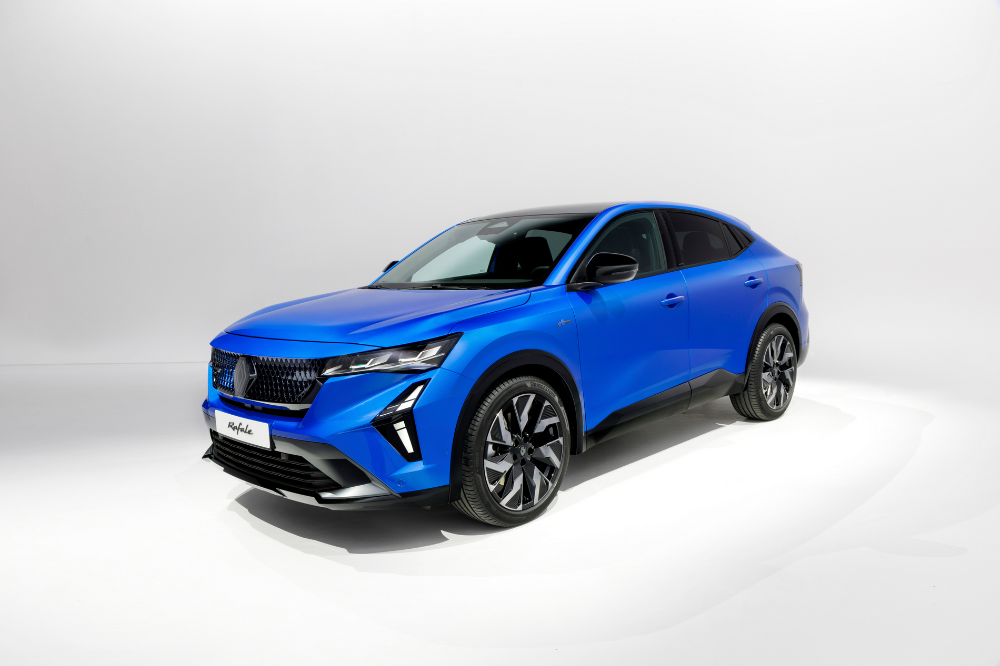
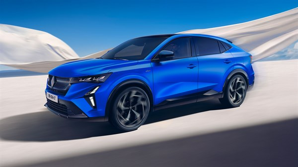
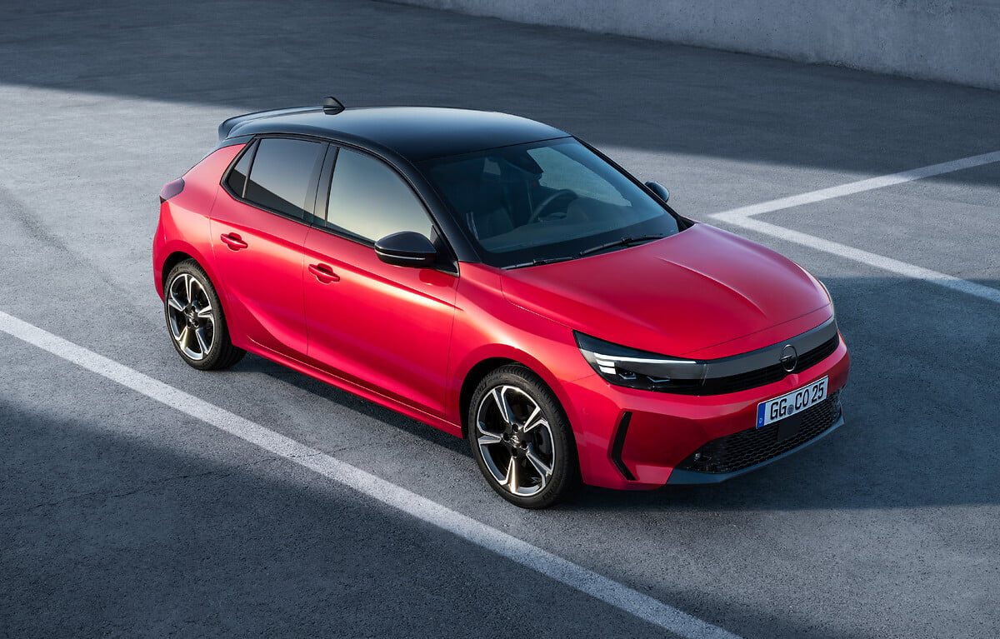

Искаш ли да работиш с най-съвременните технологии в автомобилната индустрия? Специалност „Хибридни и електрически пътни превозни средства“ в ПГМЕТТ „Христо Ботев“ те подготвя за професионална кариера с диагностика, техническо обслужване и ремонт на модерните електрически и хибридни автомобили – бъдещето на транспорта.
В този режим автомобилът се движи само с електрическия мотор. Това означава почти без шум и без вредни газове.
Тук двата двигателя работят заедно. Така автомобилът използва енергията по-ефективно.
Когато автомобилът спира, част от енергията се връща обратно в батерията и се използва отново.
Хибридните автомобили използват по-малко гориво и замърсяват по-малко околната среда.
Този тип автомобил може да се движи само на електричество, само на гориво или с двата двигателя едновременно. Батерията се зарежда автоматично по време на движение.
Този тип има по-голяма батерия, която може да се зарежда от електрическата мрежа. С нея автомобилът може да измине десетки километри само на ток.
При този тип електромоторът не движи колата самостоятелно, а само подпомага основния двигател и намалява разхода на гориво.



| 🚗 Тип автомобил | ⛽ Разход на гориво | 🌿 Емисии | 🔋 Зареждане |
|---|---|---|---|
| Бензинов | Висок | Високи | Бензиностанция |
| Хибриден | Среден | По-ниски | Гориво + батерия |
| Електрически | Много нисък | Почти нулеви | Електрическа станция |
Те могат да намалят разхода на гориво с около 30–40% в сравнение с обикновените автомобили.
Повечето хибриди се зареждат сами по време на движение и спиране.
Обикновено батерията може да работи между 8 и 15 години.